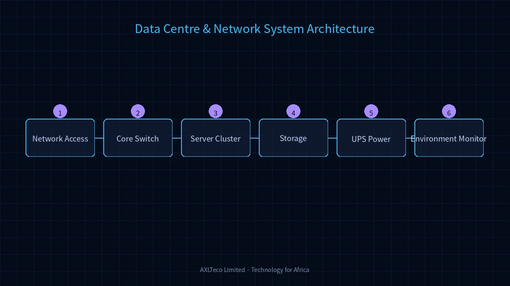
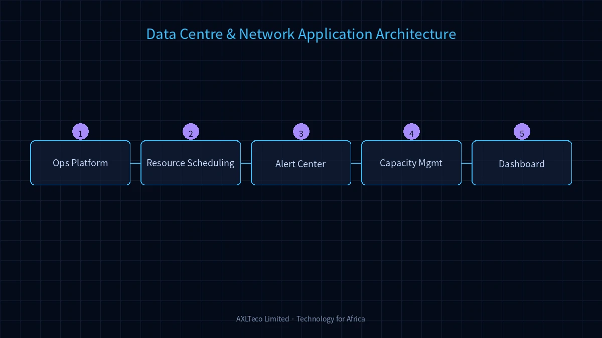

AXLTeco fournit des services complets d'infrastructure de centre de données et de conception d'architecture réseau, garantissant des opérations informatiques sécurisées, stables et efficaces.
Architecture Système

Le système adopte une architecture en couches couvrant l'infrastructure, la transmission réseau, la protection de sécurité et la gestion des opérations. La couche infrastructure inclut l'environnement, l'alimentation, l'onduleur et le refroidissement de précision ; la couche réseau couvre la commutation cœur, le routage et la couverture sans fil.
Composition de la Solution
Sélection du site, conception, alimentation, onduleur, climatisation de précision, protection incendie et mise à la terre.
Conception et mise en œuvre de systèmes de câblage structuré, déploiement cuivre/fibre.
Conception des couches cœur/agrégation/accès, routage, commutation, sans fil et SD-WAN.
Pare-feu, détection d'intrusion, filtrage web, VPN et audit de sécurité.
Grappes de serveurs, baies de stockage, virtualisation et reprise après sinistre.
Surveillance environnementale, gestion des actifs IT, performance réseau et alertes.
Architecture d'Application

L'architecture d'application adopte la convergence cloud-réseau, supportant les serveurs physiques, la virtualisation et le cloud hybride. Les contrôleurs SDN permettent l'orchestration automatisée.
Scénarios d'Application
Applicable aux centres de données d'entreprise, salles serveurs, réseaux de bureaux, réseaux de campus et interconnexion de succursales.
Avantages de la Solution
Conception modulaire avec scalabilité élastique ; architecture redondante pour haute disponibilité ; plateforme unifiée réduisant la complexité ; conforme aux normes TIA-942 et ISO27001.
Valeur de la Solution
Construire une infrastructure IT hautement disponible, sécurisée et évolutive comme base solide pour la transformation numérique. Réduire les coûts IT et améliorer la continuité des activités.
Pratique Projet
Nous avons livré des solutions pour de multiples entreprises locales africaines et institutions financées chinoises, couvrant la construction de centres de données et les déploiements réseau.